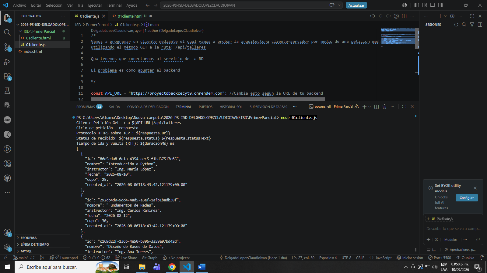
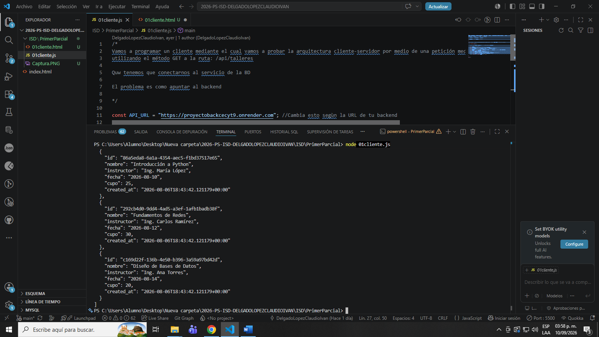

La peticion tuvo exito y arrojo los datos dentro del servidor de la pagina web.
Mediante la peticion de la API, ya que sin la ruta solo me daria un error o el INDEX
Si se conecto y lanzo los datos como el ID, nombre tanto del instrutor y de la clase, fecha y cupo, incluido cuando se creo el dato.
Puede dar error si no se tiene NODE.js en la versión mas reciente

